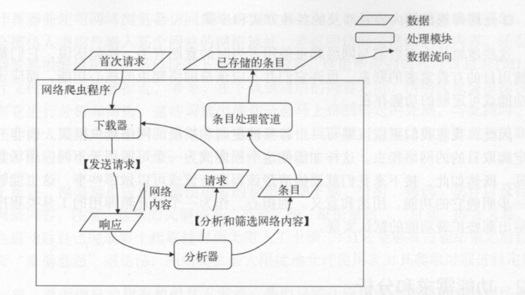
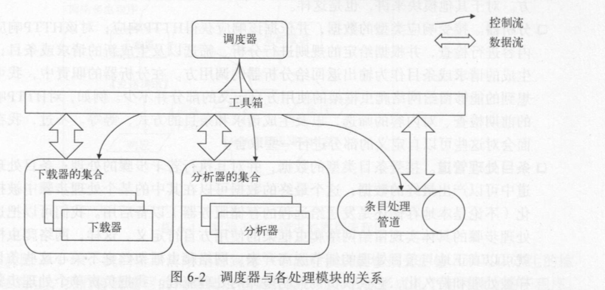
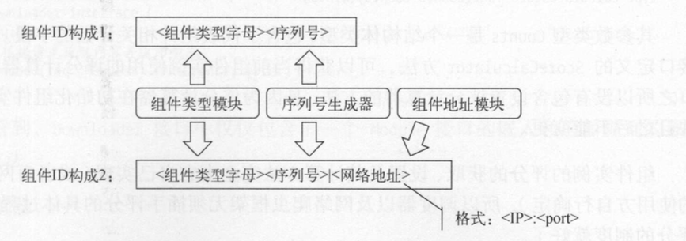
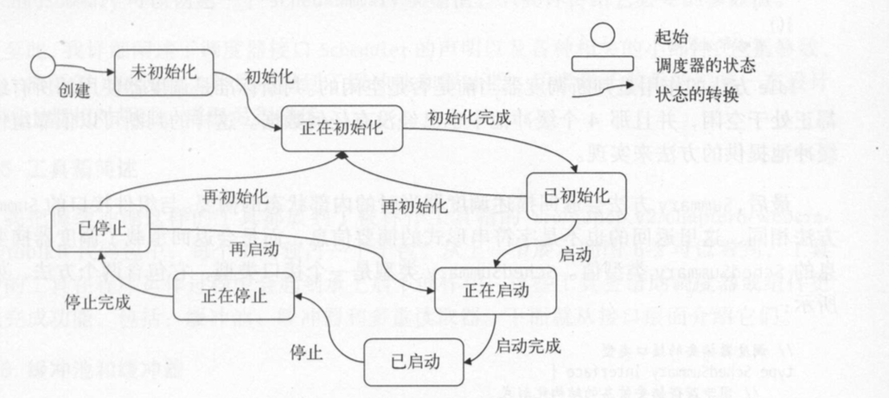

Request 数据的请求 Response 数据的响应
Item 条目结构 Error 错误的类型 包含（ 错误的类型
错误的提示信息 完整的错误提示信息）
Module
ID() MID 获取当前组件的IDAddr() string 获取当前组件的网站地址Score() uint64 获取当前组件的评分SetScore(score unit64) 设置当前组件的评分ScoreCalculator() CalculateScore 获取评分计算器CalledCount() uint64 获取当前组件被调用的计数AcceptedCount() uint64 接受调用的次数CompletedCount() uint64 成功完成的调用计数HandlingNumber() uint64 正在处理的调用数Counts() Counts 获取所有的计数信息Summary() SummaryStruct 获取组件摘要SNGenertor
Start() unit64 获取预设的最小序列号Max() unit64 获取预设的最大序列号Next() unit64 下一个序列号CycleCount() uint64 获取循环计数Get() uint64 获取一个序列号并准备下一个序列号组件ID的构成及生成方法 
type Downloader interface { Module Download(req *Request) (*Response, error) }
type ParseResponse func(httpResp *http.Response, respDepth uint32) ([]Data, []error) type Analyzer interface { Module //返回当前分析器使用的响应解析函数的列表 RespParsers() []ParseResponse //响应需要分别经过若干响应解析函数的处理，然后合并结果 Analyze(resp *Response) ([]Data, []error) }
type Pipeline interface { Module //返回当前条目处理管道使用的条目处理函数列表 ItemProcessors() []ProcessItem //向条目处理管道发送条目 Send(item Item) []error //是否遇到失败终止 FailFast() bool //设置是否快速失败 SetFailFast(failFast bool) } type ProcessItem func(item Item) (result Item, err error)
type Scheduler interface { Init(requestArgs RequestArgs, dataArgs DataArgs, moduleArgs ModuleArgs) (err error) //以首次请求为起点开始爬取 Start(firstHTTPReq *http.Request) (err error) Stop()(err error) //获取调度器状态 Status()Status //接受错误的通道 若结果为nil 说明通道不可用或调度器已停止 ErrorChan() <-chan error // 判断所有处理模块是否都处于空闲状态 Idle() bool //获取摘要实例 Summary() SchedSummary }
